Chapter 6
Vector Analysis
Applications of Vector Multiplication
Dot Product (Scalar Product)
For two vectors \(\vec{A}\) and \(\vec{B}\),
where \(\theta\) is the angle between \(\vec{A}\) and \(\vec{B}\).
The dot product measures how much of one vector lies along another. It is maximal when the vectors are parallel and zero when they are perpendicular.
Commutative: \(\vec{A}\cdot\vec{B}=\vec{B}\cdot\vec{A}\).
Distributive: \(\vec{A}\cdot(\vec{B}+\vec{C})=\vec{A}\cdot\vec{B}+\vec{A}\cdot\vec{C}\).
Scalar multiplication: \((m\vec{A})\cdot\vec{B}=m(\vec{A}\cdot\vec{B})\).
\(\vec{A}\cdot\vec{A}=|\vec{A}|^2\).
If a force \(\vec{F}\) moves a particle through a displacement \(\vec{r}\), the work done is
Only the component of \(\vec{F}\) in the direction of motion contributes to the work.
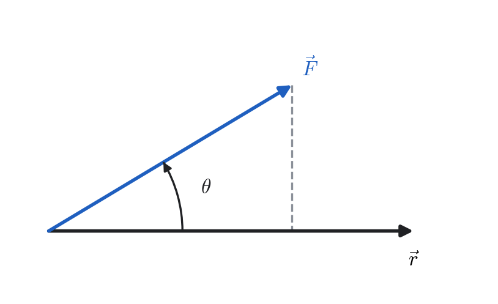
Cross Product (Vector Product)
For two vectors \(\vec{A}\) and \(\vec{B}\),
The magnitude is \(|\vec{A}\times\vec{B}|=AB\sin\theta\), and the direction is given by the right-hand rule.
The vector \(\vec{A}\times\vec{B}\) is perpendicular to both \(\vec{A}\) and \(\vec{B}\). If the two vectors are parallel or antiparallel, their cross product is zero.
Anti-commutative: \(\vec{A}\times\vec{B}=-\vec{B}\times\vec{A}\).
Distributive: \(\vec{A}\times(\vec{B}+\vec{C})=\vec{A}\times\vec{B}+\vec{A}\times\vec{C}\).
\((m\vec{A})\times\vec{B}=m(\vec{A}\times\vec{B})\).
\(\vec{A}\times\vec{A}=0\).
A force \(\vec{F}\) applied at position vector \(\vec{r}\) produces a torque
Its magnitude \(|\vec{\tau}|=rF\sin\theta\) equals the product of the force and its perpendicular lever arm.
Scalar Triple Product
This scalar represents the signed volume of the parallelepiped formed by \(\vec{A}\), \(\vec{B}\), and \(\vec{C}\).
If \(\vec{A}\cdot(\vec{B}\times\vec{C})=0\), the three vectors are coplanar. The sign of this product distinguishes right-handed and left-handed orientations.
Cyclic permutation: \(\vec{A}\cdot(\vec{B}\times\vec{C})=\vec{B}\cdot(\vec{C}\times\vec{A})=\vec{C}\cdot(\vec{A}\times\vec{B})\).
Interchanging any two vectors reverses the sign.
The absolute value equals the geometric volume of the parallelepiped.
Let \(\vec{A}=(1,2,3)\), \(\vec{B}=(2,1,1)\), and \(\vec{C}=(1,1,0)\). Then
Hence, the volume of the parallelepiped is \(V=4\) (unit)\(^3\).
Vector Triple Product
This identity is commonly known as the BAC–CAB rule. The resulting vector lies in the plane of \(\vec{B}\) and \(\vec{C}\).

For a particle in rigid rotation with angular velocity \(\vec{\omega}\), the velocity is
The linear momentum is \(\vec{p} = m\vec{v} = m(\vec{\omega} \times \vec{r})\). Hence the angular momentum is
Using the vector triple–product identity,
Therefore,
If the rotation axis is perpendicular to \(\vec{r}\), then \(\vec{r} \cdot \vec{\omega}=0\) and
This form shows that the angular momentum is parallel to the angular velocity, with magnitude proportional to the moment of inertia \(I=m r^{2}\).
Differentiation of Vectors
In physics, many vector quantities—such as position, velocity, and acceleration—vary with time or with spatial coordinates. We therefore need rules for differentiating and integrating vectors.
If a vector \(\vec{A}\) depends on a variable \(t\), its derivative with respect to \(t\) is defined as
The derivative \(\frac{d \vec{A}}{d t}\) is itself a vector, representing the rate of change of \(\vec{A}\).
If the components of \(\vec{A}\) are differentiable functions of \(t\),
then
The derivative of a vector may change the magnitude, the direction, or both. For instance, in uniform circular motion, \(|\vec{r}|\) is constant but \(\vec{r}\) changes direction continuously, producing a nonzero \(\frac{d \vec{r}}{d t}\).
1) Cartesian Coordinates \((x, y, z)\).
Position vector:
Differential displacement:
Velocity (divide by \(dt\)):
Interpretation:
2) Cylindrical Coordinates \((\rho, \phi, z)\).
Position vector:
Differential displacement:
Velocity (divide by \(dt\)):
Interpretation:
3) Spherical Coordinates \((r, \theta, \phi)\).
Position vector:
Differential displacement:
Velocity (divide by \(dt\)):
Interpretation:
- \begin{equation} \frac{d}{dt}(\vec{A}+\vec{B}) = \frac{d\vec{A}}{dt} + \frac{d\vec{B}}{dt}. \end{equation}
- \begin{equation} \frac{d}{dt}(m\vec{A}) = \frac{dm}{dt}\,\vec{A} + m\frac{d\vec{A}}{dt}, \qquad \text{where $m$ is a scalar function of $t$.} \end{equation}
- \begin{equation} \frac{d}{dt}(\vec{A}\cdot\vec{B}) = \frac{d\vec{A}}{dt}\cdot\vec{B} + \vec{A}\cdot\frac{d\vec{B}}{dt}. \end{equation}
- \begin{equation} \frac{d}{dt}(\vec{A}\times\vec{B}) = \frac{d\vec{A}}{dt}\times\vec{B} + \vec{A}\times\frac{d\vec{B}}{dt}. \end{equation}
The angular momentum of a particle is \(\vec{L} = \vec{r}\times m\vec{v}\). Then,
The quantity \(\frac{d \vec{L}}{d t}\) is the torque \(\vec{\tau}\):
Fields
Many physical quantities depend on position in space. Temperature, pressure, electric field, and magnetic field are examples of fields.
A scalar field assigns a scalar value to every point in space:
\begin{equation} \phi = \phi(x,y,z). \end{equation}Examples: temperature, electric potential, mass density.
A vector field assigns a vector to every point in space:
\begin{equation} \vec{A}=\vec{A}(x,y,z)=A_x(x,y,z)\hat{i}+A_y(x,y,z)\hat{j}+A_z(x,y,z)\hat{k}. \end{equation}Examples: velocity field of a fluid, electric and magnetic fields.
At each point \((x,y,z)\), the scalar field gives one number, while the vector field gives three component functions that can vary continuously throughout space.
For a point charge \(q\) at the origin,
The direction of \(\vec{E}\) is radial, outward for \(q>0\) and inward for \(q<0\).
Directional Derivative and Gradient
When a scalar field \(\phi(x,y,z)\) varies in space, we often wish to know the rate at which it changes in a given direction.
If \(\hat{u}\) is a unit vector specifying a direction, the rate of change of \(\phi\) in that direction is
where \(s\) measures distance along \(\hat{u}\).
The gradient of \(\phi\) is the vector field

The gradient \(\vec{\nabla}\phi\) points in the direction of maximum increase of \(\phi\), and its magnitude \(|\vec{\nabla}\phi|\) gives the maximum rate of increase per unit distance.
Find the directional derivative of
at the point \((1,2,-1)\) in the direction of the vector
Step 1: Determine the unit vector in the direction of \(\vec{A}\).
Step 2: Compute the gradient of \(\phi\).
Since \(\phi = x^2y + xz\),
Hence
At the point \((1,2,-1)\):
Step 3: Compute the directional derivative.
The directional derivative of \(\phi\) in the direction \(\hat{u}\) is given by
Substitute:
Answer:
Gradient as a Normal to a Surface
If we consider a surface \(\phi(x,y,z)=\text{constant}\), and let \(\hat{t}\) be a unit tangent vector to this surface at some point, then the directional derivative of \(\phi\) along the tangent direction is zero:
Hence, \(\vec{\nabla}\phi\) is perpendicular to all tangent directions and therefore
Find the equations of the tangent plane and the normal line to the surface of a sphere
at the point \((0,0,a)\).
Solution.
At the point \((0,0,a)\),
Step 2: Equation of the tangent plane.
Since \(\vec{\nabla}\phi\) is normal to the surface at every point, the tangent plane at \((x_0,y_0,z_0)\) is given by
At \((0,0,a)\), this becomes
This is the equation of the tangent plane at the top of the sphere.
Step 3: Equation of the normal line.
The line normal to the surface passes through \((0,0,a)\) and has direction \(\vec{\nabla}\phi(0,0,a) = 2a\hat{k}\). Hence, its vector equation is
Substitute:
Writing \(\vec{r}=x\hat{i}+y\hat{j}+z\hat{k}\):
Thus, the normal line is the \(z\)-axis.
Result:
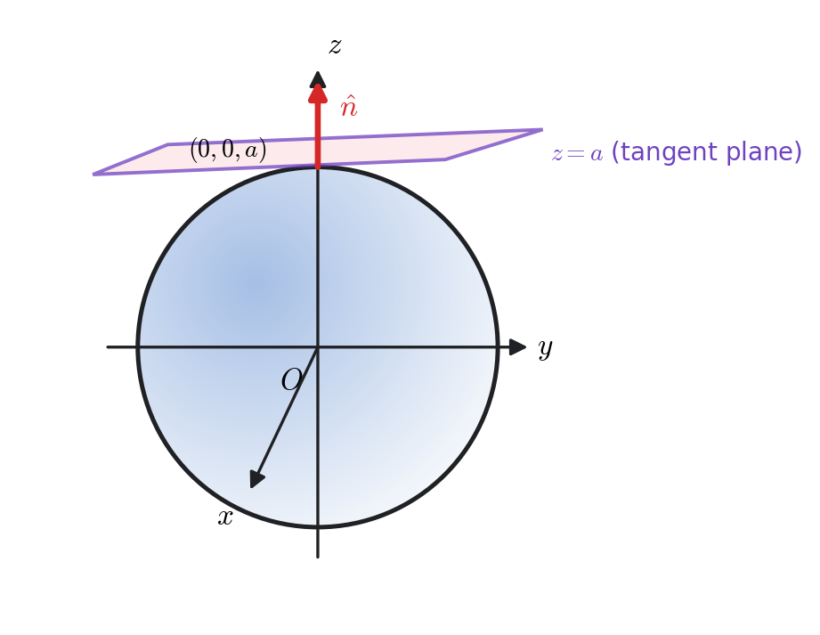
\(\vec{\nabla}(\phi+\psi)=\vec{\nabla}\phi+\vec{\nabla}\psi.\)
\(\vec{\nabla}(m\phi)=m\vec{\nabla}\phi+\phi\vec{\nabla} m.\)
\(\vec{\nabla}(\phi\psi)=\phi\vec{\nabla}\psi+\psi\vec{\nabla}\phi.\)
Expressions Involving \(\vec{\nabla}\)
The differential operator
acts on scalar and vector fields in several useful ways.
Gradient of a Scalar Field
For a scalar field \(\phi(x,y,z)\),
It produces a vector field pointing in the direction of the greatest increase of \(\phi\).
Divergence of a Vector Field
If \(\vec{A}=A_x\hat{i}+A_y\hat{j}+A_z\hat{k}\), the divergence of \(\vec{A}\) is the scalar quantity
Divergence measures the net outflow of the field from a point. A positive divergence indicates a source; a negative divergence, a sink.
Curl of a Vector Field
For \(\vec{A}=A_x\hat{i}+A_y\hat{j}+A_z\hat{k}\), the curl is the vector
The curl measures the rotation or circulation density of a vector field about a point.
\(\displaystyle \vec{V}(x,y,z)=x\sin y\,\hat{i}+\cos y\,\hat{j}+xy\,\hat{k}.\)
Components: \(V_x=x\sin y,\; V_y=\cos y,\; V_z=xy.\)
Divergence.
Curl.
Compute each term:
Therefore,
which is nonzero, indicating local rotational behavior whose strength varies with \(x\) and \(y\).
Consider three two–dimensional vector fields in the \(xy\)–plane:
(a) Divergence
Thus, \(\vec{A}\) and \(\vec{A}+\vec{B}\) represent fields with a uniform outward expansion (a source flow), while \(\vec{B}\) has zero divergence — a purely rotational flow.
(b) Curl
In two dimensions, only the \(z\)–component of the curl is nonzero:
Hence,
(c) Physical Interpretation
\(\vec{A}\): Field lines radiate outward from the origin — a pure source field. \(\vec{\nabla}\cdot\vec{A} > 0\), \(\vec{\nabla}\times\vec{A} = 0.\)
\(\vec{B}\): Field lines form closed circles — a pure rotational (vortex) field. \(\vec{\nabla}\cdot\vec{B} = 0\), \(\vec{\nabla}\times\vec{B} \neq 0.\)
\(\vec{A}+\vec{B}\): Field lines spiral outward — a combination of source and rotation. Both divergence and curl are nonzero, producing a spiral flow.

Visualization \(k=1\) and \(\omega=1 \)
Left: Pure source — arrows radiate outward uniformly.
Middle: Pure rotation — arrows circle around the origin.
Right: Spiral flow — arrows spiral outward, combining rotation and expansion.
This example clearly shows that:
Divergence quantifies the presence of sources or sinks.
Curl quantifies the local rotation of the field.
Consider a rigid body rotating about the \(z\)-axis with a constant angular velocity \(\vec{\omega} = \omega\,\hat{k}\). Let the position vector of a point in the body be
Then, the velocity field of the rotating body is given by
or explicitly
Compute the curl:
Expanding the determinant:
Simplify:
Physical Meaning: For a rigid body, the curl of the velocity field equals twice the angular velocity vector:
Thus, the curl measures the local rotational motion of the field.
The Laplacian of a scalar field \(f(x,y,z)\) is defined as the divergence of its gradient:
In Cartesian coordinates,
\(\displaystyle f(x,y,z)=x^{3}-3xy^{2}+y^{3}\).
We use the Cartesian definition \(\displaystyle \nabla^{2}f=\frac{\partial^{2} f}{\partial x^{2}}+\frac{\partial^{2} f}{\partial y^{2}}+\frac{\partial^{2} f}{\partial z^{2}}\).
First derivatives:
Second derivatives:
Laplacian:
Useful Vector Identities
\(\vec{\nabla}\cdot(\vec{\nabla}\times\vec{A}) = 0.\) Physical meaning: This identity states that the divergence of a curl is always zero. In physical terms, a rotational (circulating) field such as a magnetic field has no net source or sink. For example, \(\vec{\nabla}\cdot\vec{B}=0\) in Maxwell’s equations expresses that there are no magnetic monopoles.
špace6pt
\(\vec{\nabla}\times(\vec{\nabla}\phi) = \vec{0}.\) Physical meaning: This states that the curl of a gradient is always zero. It means that any field derived from a scalar potential (such as the electrostatic field \(\vec{E} = -\vec{\nabla}V\)) is irrotational—it has no circulation or rotational component.
špace6pt
\(\vec{\nabla}\cdot(\phi\vec{A}) = \phi\,(\vec{\nabla}\cdot\vec{A}) + \vec{\nabla}\phi\cdot\vec{A}.\)
špace4pt
\(\vec{\nabla}\times(\phi\vec{A}) = \phi\,(\vec{\nabla}\times\vec{A}) + (\vec{\nabla}\phi)\times\vec{A}.\)
špace4pt
\(\vec{\nabla}\cdot(\vec{A}\times\vec{B}) = \vec{B}\cdot(\vec{\nabla}\times\vec{A}) - \vec{A}\cdot(\vec{\nabla}\times\vec{B}).\)
špace4pt
\(\vec{\nabla}\times(\vec{\nabla}\times\vec{A}) = \vec{\nabla}(\vec{\nabla}\cdot\vec{A}) - \nabla^2\vec{A}.\)
Vector Differential Operators in a General Orthogonal Curvilinear Coordinate System
In many physical problems, Cartesian coordinates \((x,y,z)\) are not always the most convenient choice. We often use other coordinate systems such as cylindrical \((\rho,\phi,z)\) or spherical \((r,\theta,\phi)\), which are examples of orthogonal curvilinear coordinates.
Let a point in space be described by three parameters \((u_1,u_2,u_3)\), related to Cartesian coordinates by
The coordinate system is called orthogonal if the coordinate lines intersect at right angles everywhere.
At each point, define:
\(\hat{u}_1, \hat{u}_2, \hat{u}_3\): unit vectors tangent to the coordinate lines \(u_1, u_2, u_3\);
\(h_1, h_2, h_3\): scale factors (or metric coefficients) defined by
\begin{equation} h_i = \left|\frac{\partial \vec{r}}{\partial u_i}\right|, \qquad (i=1,2,3), \end{equation}where \(\vec{r} = x\,\hat{i} + y\,\hat{j} + z\,\hat{k}\) is the position vector.
Then, the differential displacement is
For any scalar field \(f(u_1,u_2,u_3)\),
This operator gives the rate and direction of maximum change of \(f\) in any orthogonal coordinate system.
For a vector field \(\vec{A} = A_1\,\hat{u}_1 + A_2\,\hat{u}_2 + A_3\,\hat{u}_3,\)
This measures the net outflow per unit volume of the field \(\vec{A}\) from an infinitesimal region.
For the same vector field \(\vec{A} = A_1\,\hat{u}_1 + A_2\,\hat{u}_2 + A_3\,\hat{u}_3,\)
This represents the local rotation or circulation of the vector field \(\vec{A}\).
The Laplacian of a scalar function \(f(u_1,u_2,u_3)\) is given by
It appears frequently in physics, for example in Poisson’s equation, the heat equation, and the Schrödinger equation.
Vector Differential Operators in Common Coordinate Systems
In vector calculus, the four most fundamental vector differential operators are:
These operators describe spatial variation of scalar and vector fields, and their expressions depend on the coordinate system and corresponding unit vectors.
1) Cartesian Coordinates \((x, y, z)\)
2) Cylindrical Coordinates \((\rho, \phi, z)\)
The unit vectors are related to the Cartesian basis by:
3) Spherical Coordinates \((r, \theta, \phi)\)
The spherical unit vectors in terms of Cartesian components are:
Maxwell’s Equations in Vacuum
In differential form, Maxwell’s equations describe the behavior of electric and magnetic fields in space and time. They connect the electric field \(\vec{E}\), magnetic field \(\vec{B}\), charge density \(\rho\), and current density \(\vec{J}\).

Physical Meaning of Each Equation
Gauss’s Law: \(\displaystyle \vec{\nabla}\cdot\vec{E} = \frac{\rho_f}{\epsilon_0}\)
The divergence of the electric field gives the local charge density.
Positive charges are sources of electric field lines, negative charges are sinks.
Gauss’s Law for Magnetism: \(\displaystyle \vec{\nabla}\cdot\vec{B} = 0\)
Magnetic field lines are always closed loops; there are no magnetic monopoles.
The field has no divergence—no “beginning” or “end.”
Faraday’s Law: \(\displaystyle \vec{\nabla}\times\vec{E} = -\frac{\partial \vec{B}}{\partial t}\)
A time-varying magnetic field induces a circulating electric field.
The curl of \(\vec{E}\) represents the tendency of \(\vec{E}\) to form closed loops.
This is the principle behind electromagnetic induction.
Ampère–Maxwell Law: \(\displaystyle \vec{\nabla}\times\vec{B} = \mu_0\vec{J}_f + \mu_0\epsilon_0\frac{\partial \vec{E}}{\partial t}\)
A circulating magnetic field is produced by electric currents \(\vec{J}\) and by changing electric fields \(\frac{\partial \vec{E}}{\partial t}\).
The second term (\(\mu_0\epsilon_0\frac{\partial \vec{E}}{\partial t}\)) is the displacement current density, introduced by Maxwell to ensure charge conservation.
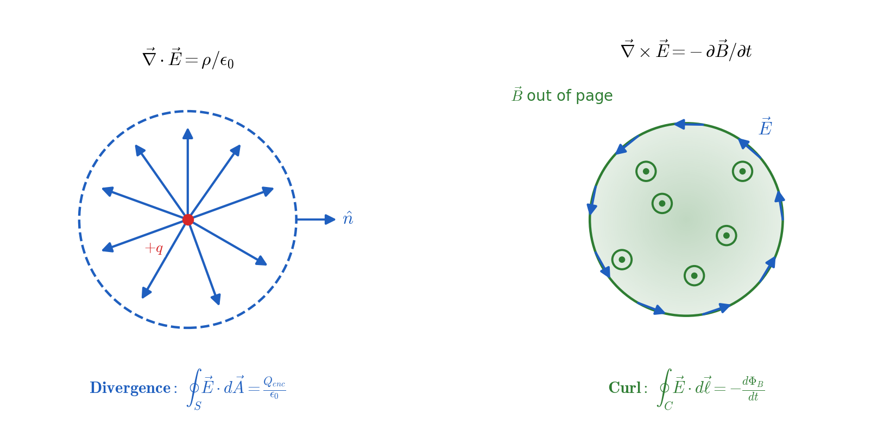
Derivation of the Electromagnetic Wave Equation
We now derive how Maxwell’s equations predict that changing electric and magnetic fields propagate as waves in vacuum. In Vacuum (no charges or currents): \(\rho_f = 0\), \(\vec{J}_f = 0.\) Then Maxwell’s equations become:
Derivation of the wave equation.
Take the curl of Faraday’s law:
Substitute \(\vec{\nabla}\times\vec{B} = \mu_0\epsilon_0\,\frac{\partial \vec{E}}{\partial t}\):
Using the vector identity
and since \(\vec{\nabla}\cdot\vec{E}=0\) in vacuum, we obtain:
Similarly, taking the curl of \(\vec{\nabla}\times\vec{B} = \mu_0\epsilon_0\,\frac{\partial \vec{E}}{\partial t}\) gives:
These are wave equations for \(\vec{E}\) and \(\vec{B}\), describing electromagnetic waves propagating through space.
The wave speed.
Comparing with the standard wave equation \(\nabla^2 u = \dfrac{1}{v^{2}}\frac{\partial^{2} u}{\partial t^{2}}\), whose solutions travel at speed \(v\), we can read off the speed of an electromagnetic wave:
Substituting the measured constants \(\mu_0 = 4\pi\times10^{-7}\ \mathrm{T\,m/A}\) and \(\epsilon_0 = 8.85\times10^{-12}\ \mathrm{C^2/(N\,m^2)}\) gives \(c \approx 3.00\times10^{8}\ \mathrm{m/s}\) — the measured speed of light. This is the historical significance of the calculation: two constants obtained from benchtop experiments on static electricity and on magnets combine to give the speed of light, which is what identified light itself as an electromagnetic wave.
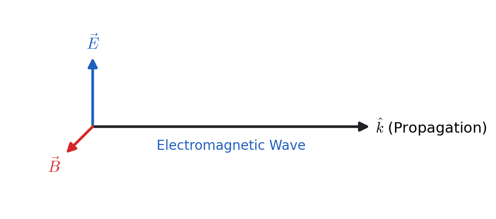
Vector Integrals
In vector calculus, integrals of scalar or vector functions can be defined over curves, surfaces, or volumes. These are classified as:
Line Integrals
We may encounter three types of line integrals along a curve \( C \):
Evaluate
along each of the following paths.
(i) Parabolic path \(y^2 = x\) from \((1,1)\) to \((4,2)\).
Step 1. Express \(d\vec{r}\).
Since \(x = y^2\), we have
Step 2. Compute \(\vec{F}\cdot d\vec{r}\).
Step 3. Integrate from \(y=1\) to \(y=2\).
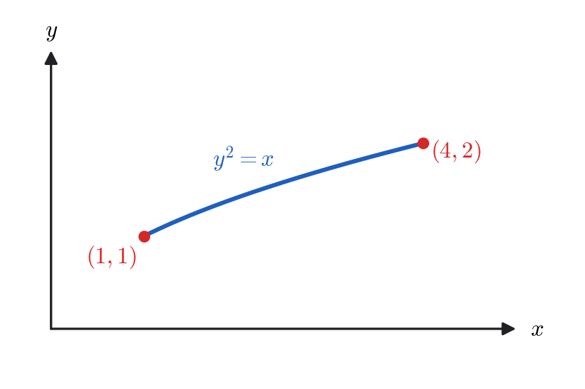
(ii) Parametric curve \(x=2u^2+u+1\), \(y=1+u^2\) from \((1,1)\) to \((4,2)\).
Step 1. Express \(d\vec{r}\).
Step 2. Compute \(\vec{F}\cdot d\vec{r}\).
Substitute \(x=2u^2+u+1\), \(y=1+u^2\):
Thus,
Expanding each product separately,
so that
Step 3. Integrate from \(u=0\) to \(u=1\).
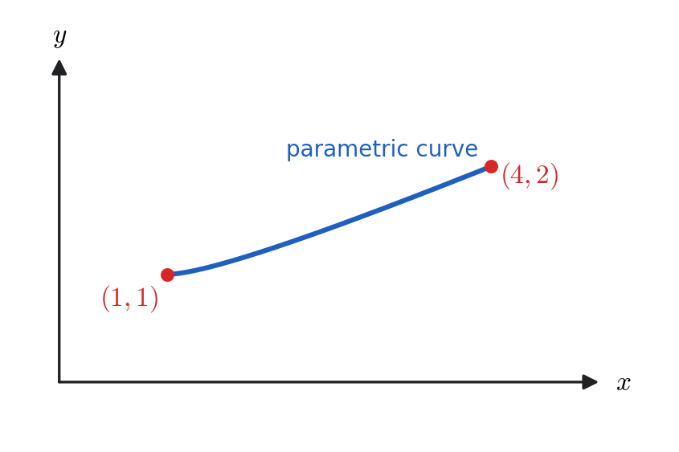
(iii) Piecewise linear path.
Segment 1: along \(y=1\) from \((1,1)\) to \((4,1)\).
Segment 2: along \(x=4\) from \((4,1)\) to \((4,2)\).
Total:
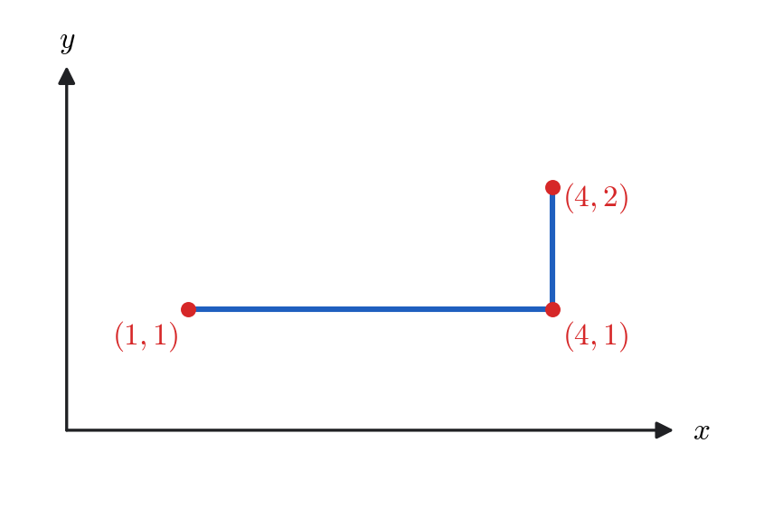
Although all three paths start and end at the same points, the resulting integrals differ:
Therefore, \(\vec{F}\) is a non-conservative vector field, since \(\int_C \vec{F}\cdot d\vec{r}\) depends on the path taken.
Evaluate the line integral
where \(C\) is the circle in the \(xy\)–plane defined by
Solution.
This integral is very simple in polar coordinates.
Using the trigonometric identity \(\cos^2\theta = \dfrac{1+\cos(2\theta)}{2}\),
Since \(\sin(2\pi)=0\),
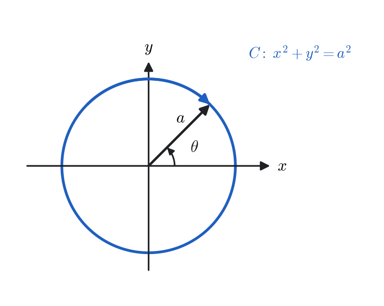
from \((-1,0)\) to \((1,0)\) along the two paths shown below.
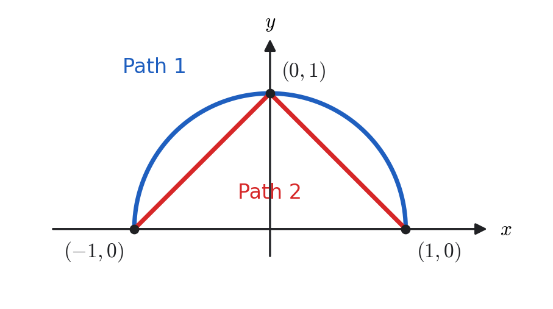
We can write this integral as
along each of the following paths.
Path 1: upper semicircle of the unit circle
Use polar coordinates on the circle \(r=1\): \(x=\cos\theta,\ y=\sin\theta,\ dx=-\sin\theta\,d\theta,\ dy=\cos\theta\,d\theta,\ x^2+y^2=1.\)
Along the upper semicircle from \((-1,0)\) to \((1,0)\) we have \(\theta:\ \pi\to 0\). Hence
Path 2: two straight-line segments
Segment A.
From \((-1,0)\) to \((0,1)\) along \(y=x+1\). Then \(dy=dx\) and
Thus
Segment B.
From \((0,1)\) to \((1,0)\) along \(y=1-x\). Then \(dy=-dx\) and
Hence
Conservative Fields
A force field \(\vec{F}\) is said to be conservative if the work done by it is independent of the path between two points:
If \(W\) depends on the path, then \(\vec{F}\) is non-conservative, and energy is being dissipated (e.g., by friction).
Condition for a Conservative Field
A vector field \(\vec{F}\) is conservative if and only if
In this case, \(\vec{F}\) can be expressed as the gradient of a scalar potential \(W(x,y,z)\):
Taking the curl of both sides:
which confirms that \(\vec{F}\) is indeed conservative.
Work in Terms of Potential Function
If \(\vec{F} = \vec{\nabla}W\), then
Hence,
The work done depends only on the values of \(W\) at the endpoints.
Potential Function
For a conservative field we have \(\vec{F} = \vec{\nabla}W\), where \(W\) is the work function. In physics it is conventional to work instead with the potential energy \(\Phi\), defined as the negative of the work function:
and therefore,
The sign is not arbitrary: with this definition the force points in the direction of decreasing potential, so a ball rolls downhill and a positive charge moves away from another positive charge. Work done by the field lowers the potential energy, \(W(B)-W(A) = -[\Phi(B)-\Phi(A)]\), which is what makes \(\Phi\) the quantity that adds to kinetic energy to give a conserved total. Both conventions appear in the literature; the sign of the gradient must be checked whenever a potential is quoted.
Show that \(\vec{F}\) where \(\vec{F}=-\vec{\nabla}\phi\).
Given
We will (i) verify \(\vec{\nabla}\times\vec{F}=\vec{0}\), (ii) find a scalar potential by component integration, and (iii) confirm the result by an explicit path integral from \((0,0,0)\) to \((x,y,z)\).
Step 1 — Check \(\vec{\nabla}\times\vec{F}=\vec{0}\) (conservative test).
Compute components carefully:
Hence \(\vec{\nabla}\times\vec{F}=\vec{0}\). On a simply connected domain in \(\mathbb{R}^3\) (e.g. all of \(\mathbb{R}^3\)), this implies that \(\vec{F}\) is conservative.
Step 2 — Find the work function by component integration. We seek \(W\) with \(\vec{F}=\vec{\nabla}W\), so the three partial derivatives of \(W\) are the three components of \(\vec{F}\). Integrate the first one in \(x\), holding \(y\) and \(z\) fixed:
where the “constant” of integration may still depend on \(y\) and \(z\). Now impose the second component:
so \(f\) depends on \(z\) alone, \(f=f(z)\). Finally impose the third component:
giving \(f(z) = -z + C\). Therefore
As a check, \(\vec{\nabla}W = (2xy-z^{3})\hat{i} + x^{2}\hat{j} - (3xz^{2}+1)\hat{k} = \vec{F}\). ḩeckmark
Step 3 — Confirm by an explicit path integral. Because \(\vec{F}\) is conservative we may choose any convenient path from the origin to \((x,y,z)\). Take three straight segments along the axes in turn, and set \(C=0\) so that \(W(0,0,0)=0\).
Segment 1, from \((0,0,0)\) to \((x,0,0)\) with \(y=z=0\): here \(d\vec{r}=dx'\,\hat{i}\) and \(F_x = 2x'(0)-0^{3}=0\), so this segment contributes nothing.
Segment 2, from \((x,0,0)\) to \((x,y,0)\): here \(d\vec{r}=dy'\,\hat{j}\) and \(F_y = x^{2}\), which is constant along the segment, so
Segment 3, from \((x,y,0)\) to \((x,y,z)\): here \(d\vec{r}=dz'\,\hat{k}\) and \(F_z = -(3xz'^{2}+1)\), so
Adding the three contributions,
which agrees with the result of Step 2. ḩeckmark
Physical Examples of Line Integrals
Line integrals appear frequently in physics, where they often represent quantities such as work, circulation, or magnetic flux linkage.
Below are some important physical contexts where line integrals are used.
1. Work Done by a Force Field
This represents the work done by a force \(\vec{F}\) in moving a particle along a path \(C\).
2. Electrostatic Potential Energy
The electrostatic potential energy gained by moving a charge \(q\) through an electric field \(\vec{E}\) along a path \(C\) is
The negative sign indicates that the electric field does work against the potential difference.
3. Ampère’s Law (Magnetostatics)
The circulation of the magnetic field around a closed loop \(C\) is proportional to the current \(I\) enclosed by that loop:
This integral form of Ampère’s law relates magnetic fields to the steady currents that produce them.
4. Magnetic Force on a Current Loop
A current-carrying wire placed in a magnetic field \(\vec{B}\) experiences a magnetic force given by
This expression gives the total force on a loop of current \(I\) in a magnetic field. Each element of the wire experiences an infinitesimal force \(d\vec{F} = I\,d\vec{r}\times\vec{B}\).
Surface and Volume Integrals
Surface Integrals
A surface integral generalizes the concept of a line integral to a two-dimensional surface. For a surface \(\sigma\) with unit normal vector \(\hat{n}\) and differential area element \(d\vec{\sigma} = \hat{n}\,d\sigma\), we can define three common types of surface integrals:
The most important and frequently encountered is
which represents the flux of the vector field \(\vec{F}\) through the surface \(S\). Physically, this measures how much of the field “flows” through \(S\). Only the normal component of \(\vec{F}\) contributes to the flux; tangential components make no contribution.
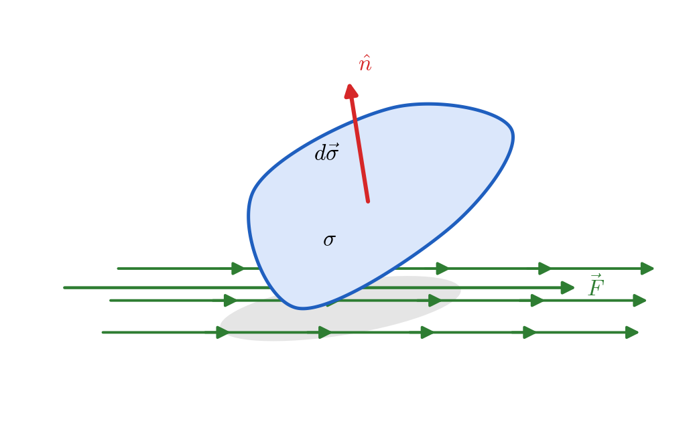
Volume Integrals
A volume integral extends the concept to three dimensions. For a scalar field \(\phi(x,y,z)\),
represents the total accumulation of \(\phi\) over a volume \(V\).
For a vector field \(\vec{A} = A_x\,\hat{i} + A_y\,\hat{j} + A_z\,\hat{k}\),
reducing the vector integral to a sum of scalar volume integrals over the components.
Green’s Theorem in the Plane
The one–dimensional Fundamental Theorem of Calculus states:
relating the integral of a derivative over an interval to the function’s change at its endpoints. In two dimensions, a similar idea holds: the integral of derivatives over an area \(A\) corresponds to function values along its boundary \(C\). This reasoning leads directly to Green’s Theorem.
If \(P(x,y)\) and \(Q(x,y)\) have continuous first partial derivatives in a simply connected region \(A\) bounded by a positively oriented closed curve \(C\), then
Proof
Part I: the term involving \(\frac{\partial P}{\partial y}\).
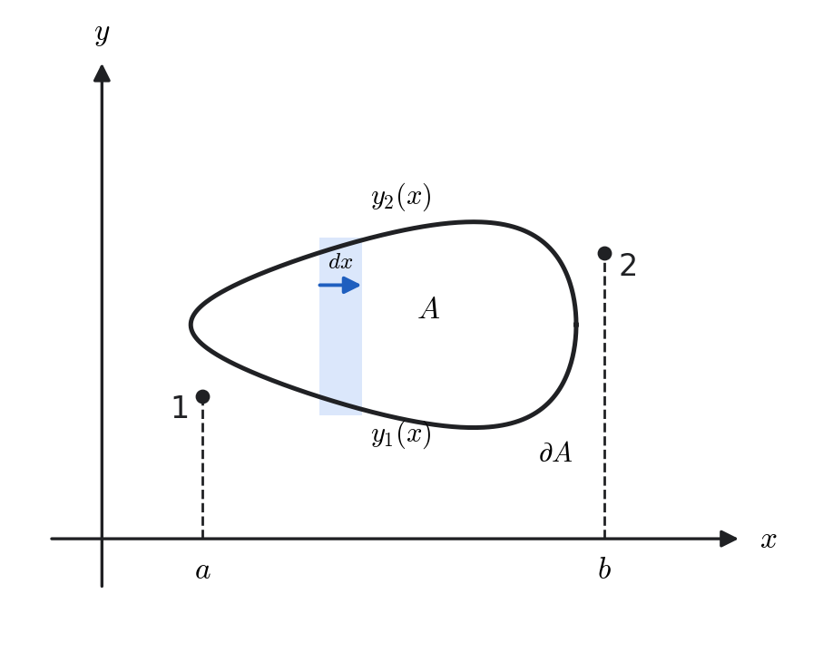
Consider
Assume the region can be described by the equations
so that
Along a vertical line (\(x=\text{const}\)), \(dx=0\) and \(dP = \frac{\partial P}{\partial y}\,dy\). Then
Hence,
Part II: the term involving \(\frac{\partial Q}{\partial x}\).
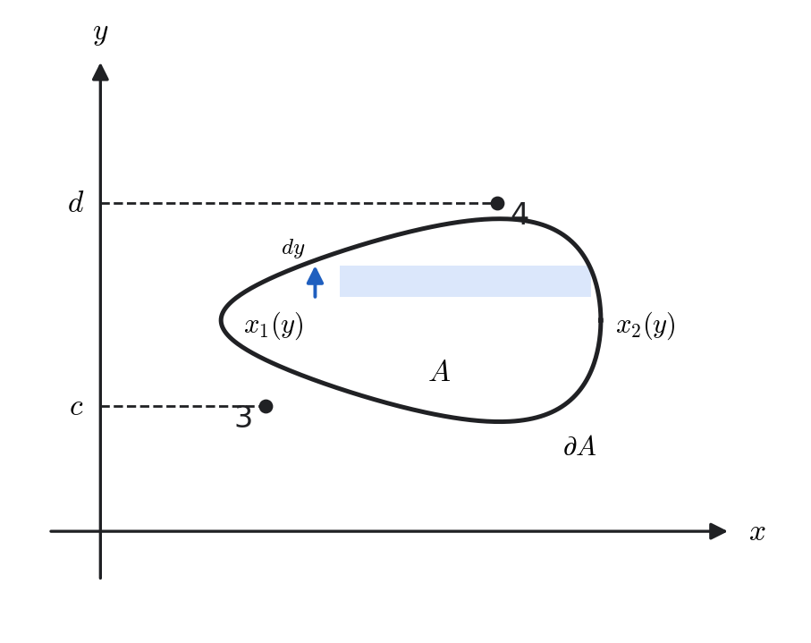
Consider
Assume the region can also be described by
so that
Along a horizontal line (\(y=\text{const}\)), \(dy=0\) and \(dQ = \frac{\partial Q}{\partial x}\,dx\). Then
Hence,
The two parts must now be combined with care over signs. From Part I, \(I = -\oint_{\partial A} P\,dx\), so that \(\oint_{\partial A} P\,dx = -I\); from Part II, \(\oint_{\partial A} Q\,dy = II\). The boundary integral we want is therefore the difference \(II - I\), not the sum:
Writing each term as its area integral,
and hence
which is Green's theorem. The minus sign in front of \(\frac{\partial P}{\partial y}\) traces back to Part I, where traversing the boundary counterclockwise means the upper curve \(y_2(x)\) is crossed from right to left.
Physical Interpretation
The left-hand side represents the circulation of the vector field \(\vec{F}(x,y) = P(x,y)\,\hat{i} + Q(x,y)\,\hat{j}\) around the closed curve \(C\).
The right-hand side measures the total curl flux of \(\vec{F}\) through the enclosed region \(A\).
Hence, Green’s theorem states that the local rotation (curl) of a field sums to the total circulation along its boundary.
Green’s theorem generalizes the Fundamental Theorem of Calculus from 1D to 2D:
Let
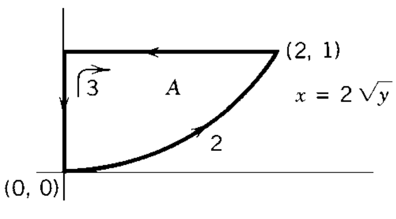
Compute the work \(W=\displaystyle\oint_C \vec{F}\cdot d\vec{r}\).
Using Green’s theorem. Since
we have
Method Two: Direct Evaluation
The boundary is traversed counterclockwise as:
Path \(C_1\): The curve is \(x = 2\sqrt{y}\), or equivalently \(y = \dfrac{x^{2}}{4}\), with \(x:0\to2.\)
Then
Path \(C_2\): \(y=1,\ dy=0,\ x:2\to0\).
Thus
Path \(C_3\): \(x=0,\ dx=0,\ y:1\to0\).
Then
Total Work (Counterclockwise):
The Divergence and Stokes’s Theorems
The Divergence Theorem in the Plane
Let
be a continuously differentiable vector field defined on a region \(A\) of the \(xy\)-plane, bounded by a positively oriented (counterclockwise) closed curve \(\partial A\).
To connect this with Green’s theorem, define
Then the combination appearing in Green’s theorem,
becomes
Geometric Relation to the Line Integral
Along the curve \(\partial A\), the differential displacement vector is
which is tangent to the boundary. The outward normal vector (perpendicular to the tangent) is
where \(ds = \sqrt{(dx)^2 + (dy)^2}\) is the differential arc length.

Now, using \(P=-F_y\) and \(Q=F_x\),
Substituting into Green’s theorem gives
This states that the total flux of \(\vec{F}\) through the boundary \(\partial A\) equals the integral of the divergence of \(\vec{F}\) over the enclosed region \(A\).
Extension to Three Dimensions (Gauss’s Theorem)
If \(\vec{F}(x,y,z)\) has continuous partial derivatives within a closed volume \(\tau\) bounded by a closed surface \(\sigma\), then
The left-hand side measures the total source strength (divergence) of \(\vec{F}\) within the volume \(V\).
The right-hand side measures the total flux of \(\vec{F}\) through the enclosing surface \(S\).
Gauss’s theorem thus connects the local divergence of a field to its global outflow.
Let
and let \(\tau\) be the solid right circular cylinder of radius \(R\) and height \(h\) whose axis is the \(z\)-axis, with bottom at \(z=0\) and top at \(z=h\). Its boundary \(\partial\tau=\sigma\) consists of three pieces:
Goal. Verify the Divergence Theorem
for this \(\vec{F}\) and \(\tau\).
Compute the divergence.
\begin{equation} \vec{\nabla}\cdot\vec{F} =\frac{\partial F_x}{\partial x}+\frac{\partial F_y}{\partial y}+\frac{\partial F_z}{\partial z} =\frac{\partial (\alpha z)}{\partial z}=\alpha. \end{equation}Evaluate the volume integral. Since \(\vec{\nabla}\cdot\vec{F}=\alpha\) is constant,
\begin{equation} \int_{\tau} (\vec{\nabla}\cdot\vec{F})\,d\tau =\alpha\int_{\tau} d\tau =\alpha\;(\text{Vol of cylinder}) =\alpha\,\pi R^2 h. \end{equation}Decompose the surface flux.
\begin{equation} \oint_{\partial \tau} \vec{F}\cdot d\vec{\sigma} =\iint_{S_1}\vec{F}\cdot d\vec{\sigma} +\iint_{S_2}\vec{F}\cdot d\vec{\sigma} +\iint_{S_3}\vec{F}\cdot d\vec{\sigma}. \end{equation}Flux through the bottom disk \(S_1\) (at \(z=0\)). The outward normal is \(-\hat{k}\), and on \(S_1\) we have \(\vec{F}=\alpha(0)\hat{k}=\vec{0}\). Hence
\begin{equation} \iint_{S_1}\vec{F}\cdot d\vec{\sigma}=0. \end{equation}Flux through the lateral surface \(S_3\) (\(\rho=R\)). Here \(d\vec{\sigma}=\hat{\rho}\,R\,d\phi\,dz\) (outward), while \(\vec{F}=\alpha z\,\hat{k}\) is parallel to \(\hat{k}\). Since \(\hat{k}\cdot\hat{\rho}=0\),
\begin{equation} \iint_{S_3}\vec{F}\cdot d\vec{\sigma}=0. \end{equation}Flux through the top disk \(S_2\) (at \(z=h\)). The outward normal is \(+\hat{k}\) and \(\vec{F}=\alpha h\,\hat{k}\) on \(S_2\). Thus
\begin{equation} \iint_{S_2}\vec{F}\cdot d\vec{\sigma} =\alpha h\iint_{S_2} d\sigma =\alpha h\,(\pi R^2). \end{equation}Add the contributions.
\begin{equation} \oint_{\partial \tau} \vec{F}\cdot d\vec{\sigma} = 0 + \alpha h\,\pi R^2 + 0 = \alpha\,\pi R^2 h. \end{equation}Conclusion (Theorem verified).
\begin{equation} \boxed{ \int_{\tau} (\vec{\nabla}\cdot\vec{F})\,d\tau = \alpha\,\pi R^2 h = \oint_{\partial \tau} \vec{F}\cdot d\vec{\sigma}. } \end{equation}Hence, the Divergence Theorem holds for \(\vec{F}=\alpha z\,\hat{k}\) on the cylindrical region \(\tau\).
Compute
and \(S\) is the sphere
centered at the origin with radius \(R=3\), and \(\hat{n}\) is the outward unit normal vector.
Solution.
By Gauss’s theorem,
where \(\tau\) is the solid ball enclosed by the surface \(S\).
Thus, the flux through \(S\) equals the triple integral of the divergence of \(\vec{F}\) over the volume of the sphere.
Step 2. Compute the Divergence of \(\vec{F}\).
Compute each derivative separately:
Hence,
Step 3. Evaluate the Volume Integral.
Since \(\vec{\nabla}\cdot\vec{F}=1\) everywhere,
The volume of a sphere is
so
Step 4. Write the Final Answer.
Because \(\vec{\nabla}\cdot\vec{F}=1\) everywhere, the flux through any closed surface equals the enclosed volume.
In this problem, the direction of \(\hat{n}\) is outward, consistent with Gauss’s theorem.
This example illustrates how the divergence theorem transforms a difficult surface integral into a simple volume integral.
Stokes’s Theorem in the Plane
Let
Then the combination in Green’s theorem,
is the \(z\)-component of the curl of \(\vec{F}\), which represents the local rotation or vorticity.
Using
we can write
Substituting this into Green’s theorem gives
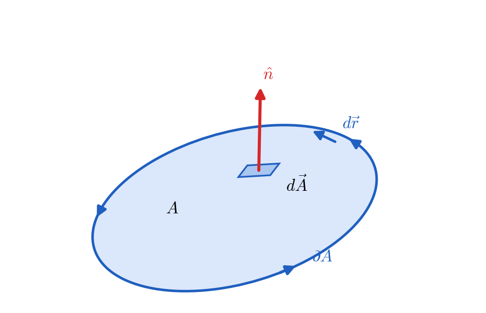
This expresses that the circulation of \(\vec{F}\) around a closed boundary equals the total curl flux through the enclosed region.
Extension to Three Dimensions (General Stokes’s Theorem)
If \(\vec{F}\) has continuous partial derivatives on a smooth surface \(\sigma\) bounded by a positively oriented closed curve \(C\), then
The line integral \(\oint_{\partial \sigma} \vec{F}\cdot d\vec{r}\) measures the circulation of \(\vec{F}\) along the boundary \(\partial \sigma\).
The surface integral \( \int_{\sigma} (\vec{\nabla}\times\vec{F})\cdot d\vec{\sigma}\) measures the total curl flux through the surface \(\sigma\).
Stokes’s theorem connects the local rotation of a field to its global circulation.
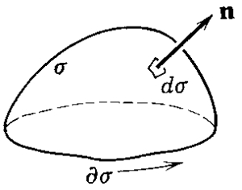
Let
and let \(S\) be the upper hemisphere
with outward unit normal \(\hat{n}\). We wish to evaluate
by two independent methods.
Step 1 — Direct Surface Integral on the Hemisphere.
(a) Compute the curl of \(\vec{F}\).
(b) Compute \((\vec{\nabla}\times\vec{F})\cdot\hat{n}\). On the sphere \(r=a\),
Hence
(c) Evaluate the surface integral. In spherical coordinates,
for \(0\le \theta \le \frac{\pi}{2}\), \(0\le \phi \le 2\pi\). Then
Step 2 — Using Stokes’s Theorem (Boundary Method).
By Stokes’s theorem,
where \(C\) is the boundary of the hemisphere:
oriented counterclockwise as viewed from \(+z\).
(a) Parameterize the boundary.
with \(0 \le \phi \le 2\pi.\)
(b) Evaluate \(\vec{F}\) along \(C\). On the circle \(z=0\):
(c) Compute \(\vec{F}\cdot d\vec{r}\).
(d) Integrate around the circle.
Result and Interpretation.
Both the direct surface integration and Stokes’s theorem give the same result.
The negative sign indicates that the curl \((\vec{\nabla}\times\vec{F})=-3\hat{k}\) points opposite to the outward normal of the upper hemisphere.
This example illustrates the power of Stokes’s theorem: the curved surface integral can be replaced by a much simpler line integral around the boundary.
Maxwell’s Equations and the Continuity Equation
1. Differential Form
Taking the divergence of the Ampère–Maxwell law and using \(\vec{\nabla}\cdot(\vec{\nabla}\times\vec{B})=0\) gives
which is the continuity equation in differential form, expressing local charge conservation.
2. Integral Form via Divergence and Stokes’ Theorems
We now apply the Divergence Theorem
and the Stokes’ Theorem
Applying these to each of Maxwell’s equations:
3. Continuity Equation in Integral Form
Starting from the differential form
integrate over a fixed volume \(\tau\):
Apply the Divergence Theorem to the first term:
Define
so that
This expresses charge conservation: the rate of decrease of enclosed charge within the volume \(\tau\) equals the net outward current through its bounding closed surface \(\sigma\).
4. Physical Interpretation
Gauss’s law for \(\vec{E}\): electric flux through a closed surface equals the enclosed charge.
Gauss’s law for \(\vec{B}\): magnetic field lines form closed loops — no magnetic monopoles.
Faraday’s law: a changing magnetic flux induces an electric field (emf).
Ampère–Maxwell law: magnetic fields arise from currents and changing electric fields.
Continuity equation: charge is conserved — current outflow equals the decrease of enclosed charge.
Summary of Key Vector Identities
Let \(\phi\) and \(\psi\) be scalar fields, and \(\vec{A}\), \(\vec{U}\), \(\vec{V}\) be vector fields.
These relations are essential in fluid dynamics, electromagnetism, and quantum mechanics. They enable transformations of differential equations, simplification of vector expressions, and conversions between integral and differential forms of physical laws.
Where Vector Analysis Is Used
Maxwell's equations, treated twice in this chapter, are the clearest demonstration of what vector analysis is for: four statements about \(\vec{\nabla}\cdot\) and \(\vec{\nabla}\times\) contain the whole of classical electromagnetism, including the existence of light. The same operators do similar work elsewhere.
Electromagnetism. Gauss's law is a statement about divergence, Faraday's and Ampère's about curl. The integral and differential forms are connected by exactly the divergence and Stokes's theorems proved here, which is why those theorems are not an optional extra.
Conservative forces and potentials. \(\vec{\nabla}\times\vec{F}=\vec 0\) is the test for whether a potential energy exists at all. Gravity and electrostatics pass; friction does not. This is what makes energy conservation usable.
Fluid dynamics. The divergence of the velocity field measures whether fluid is being compressed, and its curl measures local rotation — literally the rate at which a small paddle wheel would spin, as the rigid-rotation example showed.
Heat and diffusion. The Laplacian \(\nabla^2 T\) measures how much a point differs from the average of its neighbours, which is why it governs diffusion and why \(\nabla^2 T = 0\) describes steady state (Chapter 10).
Curvilinear coordinates. The general expressions for gradient, divergence and curl in orthogonal coordinates let the same physics be written in whatever coordinates match the symmetry of the problem, as in Chapter 5.
One idea unifies the integral theorems of this chapter. Green's theorem, the divergence theorem and Stokes's theorem all say the same thing: the accumulated derivative over a region equals the values on its boundary. In one dimension this is the Fundamental Theorem of Calculus, \(\int_a^b f'\,dt = f(b)-f(a)\). Each theorem here is that statement in a higher dimension, with the derivative replaced by a divergence or a curl, and the endpoints by a closed curve or a closed surface.
For the Interested Reader
Vector analysis is where the geometry and the algebra can easily come apart: it is possible to compute a curl correctly for a whole course without ever picturing what it measures. The first item below is the strongest remedy for that. Everything listed is free.
Seeing divergence and curl
3Blue1Brown builds both operators from what they do to a flowing fluid, and then shows why Maxwell's equations say what they say. Twenty minutes here is worth a great deal of symbol-pushing:
Divergence and curl: the language of Maxwell's equations — 3Blue1Brown
 Watch on YouTube
Watch on YouTube
The operators and the integral theorems
OpenStax, Calculus Volume 3, Chapter 6. 6.5 Divergence and Curl, 6.4 Green's Theorem, 6.7 Stokes' Theorem and 6.8 The Divergence Theorem — the same three theorems, with more examples and with the orientation conventions spelled out more slowly than we do.
Paul's Online Math Notes. Line Integrals and Stokes' Theorem — practice at parametrising curves and surfaces, which is where most of the difficulty in these integrals actually lies.
A note on notation, since it varies more here than in any other chapter. Some books write \(\operatorname{grad}\phi\), \(\operatorname{div}\vec V\) and \(\operatorname{curl}\vec V\) where we write \(\vec{\nabla}\phi\), \(\vec{\nabla}\cdot\vec V\) and \(\vec{\nabla}\times\vec V\); others use \(\operatorname{rot}\vec V\) for the curl. The operator notation used here is worth preferring because it makes identities such as \(\vec{\nabla}\cdot(\vec{\nabla}\times\vec V)=0\) look like what they are — statements about repeated application of one operator.